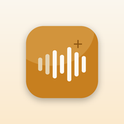

Four options side by side
Enhance Recording is Apple's. NoisyNo is ours. Adobe Podcast Enhance Speech and Kapwing are two well-known browser tools that clean audio you upload. Prices are US prices. Where a vendor doesn't say something, the cell says not stated rather than guessing.
Scroll the table sideways to see every column →
Noise removal options as described by their vendors, checked 1 November 2026. Superscript numbers link to the sources.
| Option | What it does | Uploads your audio to a server? | Account required? | Price model | Platforms | Export cost / limits | Works offline? |
|---|---|---|---|---|---|---|---|
| Voice Memos: Enhance RecordingApple, built into iPhone | Reduces background noise and echo when you play Mono and Stereo recordings.1 | Not stated for Enhance. Recordings sync to iCloud only if Voice Memos is turned on in iCloud settings.13 | Not stated for Enhance. iCloud sync uses your Apple Account.3 | Part of the built-in Voice Memos app.1 | iPhone. The Voice Memos app is also on iPad and Mac.13 | A playback setting: Apple says it doesn't change the recording. Sharing makes one .m4a with audio effects mixed in; Apple doesn't say whether that includes Enhance.12 | Not stated1 |
| NoisyNoGrayForge (this site) | Removes steady background noise (hum, hiss, fan, A/C, wind, room tone, traffic) from voice recordings and video audio. Tuned for speech, not music.56 | No. Files are processed on the device; limited diagnostics don't include file names or audio.56 | No.56 | Free download; noise removal free at any length. Pro: one-time in-app purchase, no subscription (Mac Pro bought separately).56 | iPhone, iPad, Mac, Android56 | Cleaned audio as M4A (AAC), free. Lossless WAV, cleaned video export, batch and loudness normalization need Pro.56 | Yes, once the app is installed.5 |
| Adobe Podcast Enhance SpeechAdobe, web app | Cleans up spoken audio after recording; strength adjustment on the paid plan.78 | Yes. You upload the file to the web app.79 | Yes, a free Adobe account.8 | Free plan. Firefly Pro plan (includes Adobe Podcast Premium): $19.99/month.7 | Web browser7 | Free: audio only, one file at a time, up to 30 minutes and 500 MB per file, 1 hour a day. Paid: video, bulk upload, files up to 2 hours and 1 GB, 4 hours a day.7 | No; it runs on the web.79 |
| Kapwing Clean AudioKapwing, web app | Reduces background noise in uploaded audio and video.10 | Yes. Kapwing is cloud-based.10 | Yes, to export.1012 | Free plan. Pro $24/month, or $16/month billed yearly.11 | Web browser, including phone browsers10 | Free: up to 5 minutes of Clean Audio; exports carry a watermark and stop at 720p. Pro: up to 500 minutes a month. One Kapwing page says the noise remover needs Pro.101112 | No; it's cloud-based.10 |
Vendor pages change often, and Kapwing's own pages disagree on some free-plan limits. Check the current page before you rely on a number.
What Enhance Recording actually does
In Apple's current iPhone User Guide, Enhance Recording sits with the playback options, next to playback speed and Skip Silence. To use it, open the Voice Memos app, tap the recording, tap the more button, tap Options, and turn on Enhance Recording.1
Apple says it reduces background noise and echo when you play Mono and Stereo recordings, and that changing these playback options doesn't affect the recording itself. The setting stays with that one memo and is applied each time you play it.1 When you share a memo, Voice Memos can create a single .m4a file with audio effects and layers mixed in, but Apple's guide doesn't say whether Enhance counts as one of those effects.2 If you need the cleaned version as a file, share it, play the shared copy, and listen before you rely on it.
Voice Memos can also filter background sound while you record: with Voice Memos open, open Control Center, tap Voice Memos at the top, and choose Voice Isolation.4 Noise that never gets recorded doesn't need removing later.
How we checked
GrayForge makes NoisyNo, so read this page knowing that. Every fact about Apple, Adobe and Kapwing comes from their own support pages, plan pages and tool pages, read on 1 November 2026, not from review sites. NoisyNo's facts come from its product page and the GrayForge llms.txt. We haven't run the same recording through all four, so this page doesn't score them on sound quality.
Which one to use when
- You'll only listen to the memo on your iPhone, and the noise is light. Turn on Enhance Recording. It's already on the phone.
- You're about to record. Choose Voice Isolation in Control Center first.
- You need a cleaned file to send, transcribe or publish, or you're on Android, or the voice is in a video: NoisyNo cleans it on the device and saves a new file. The voice memo walkthrough shows the steps.
- The recording is confidential, like a meeting, an interview or a doctor's appointment: an on-device tool keeps it off other companies' servers. If you use a web tool, read its privacy policy first. More on that in removing noise without uploading.
- You're on a computer where you can't install apps and the clip isn't sensitive: Adobe Podcast's free plan takes files up to 30 minutes, 1 hour a day; Kapwing's free plan covers up to 5 minutes of Clean Audio, with a watermark on exports.
Where NoisyNo is weaker
- It's an extra step. Enhance Recording is a switch inside Voice Memos. With NoisyNo you share the memo to another app and get a new file back.
- Speech, not music. NoisyNo is tuned for voices. Sudden sounds like a door slam, a cough or a bark over a word are much harder for any denoiser, and a voice buried far below the noise is improved rather than rescued.
- It needs an install. NoisyNo runs on iPhone, iPad, Mac and Android. On a Windows PC, or a computer where you can't install apps, a browser tool is the practical option.
- Some exports cost money. Cleaned M4A audio is free, but lossless WAV, cleaned video export and batch processing are part of the one-time Pro purchase.
- Speed depends on your device and the length of the clip, because the work happens on the device.
Frequently asked questions
Does Enhance Recording change the original voice memo?
Apple's iPhone User Guide lists Enhance Recording among the playback options: it reduces background noise and echo when you play Mono and Stereo recordings, and Apple says changing these options doesn't affect the recording itself. Apple doesn't say whether a shared copy includes the effect, so play the shared file before you rely on it.
Is Enhance Recording enough to clean up a voice memo?
For a memo with light, steady noise that you only listen to on your iPhone, often yes, and it is already on the phone. If you need a cleaned file to keep or share, you're on Android, or the voice is in a video, a dedicated tool such as NoisyNo is the better fit.
Do browser noise removers upload my recording?
Yes. Adobe Podcast Enhance Speech and Kapwing both work on files you upload, and both need an account (Kapwing to export). Adobe's free plan takes files up to 30 minutes and 1 hour a day; Kapwing's free plan includes up to 5 minutes of Clean Audio and watermarks exports.
Is NoisyNo free?
NoisyNo is free to download and noise removal is free at any length. Pro is a one-time in-app purchase that adds cleaned video export, batch processing, loudness normalization, lossless WAV export and trimming. There is no subscription.
Does NoisyNo upload my audio?
No. Audio and video files are processed on the device. Limited Firebase diagnostics may run for app quality, and they do not include file names or audio content.
Sources
All pages were read on 1 November 2026. Prices are the US prices shown on those pages that day.
- Play a recording in Voice Memos on iPhone, Apple iPhone User Guide (iOS 27) · https://support.apple.com/en-gb/guide/iphone/iphebbd067ce/iosEnhance Recording steps; reduces background noise and echo when playing Mono and Stereo recordings; playback options don't affect the recording itself. Checked 2026-11-01.
- Share a recording in Voice Memos on iPhone, Apple iPhone User Guide · https://support.apple.com/en-gb/guide/iphone/iph3d6dc359/iosRendered option creates a single .m4a file with audio effects and layers mixed in. Checked 2026-11-01.
- Keep recordings up to date in Voice Memos on iPhone, Apple iPhone User Guide · https://support.apple.com/en-gb/guide/iphone/iph38b91c7af/iosiCloud sync across iPhone, iPad and Mac with the same Apple Account and Voice Memos turned on in iCloud settings. Checked 2026-11-01.
- Make a recording in Voice Memos on iPhone, Apple iPhone User Guide · https://support.apple.com/en-gb/guide/iphone/iph4d2a39a3b/iosFiltering out background sounds with Voice Isolation from Control Center. Checked 2026-11-01.
- NoisyNo product page (GrayForge) · https://grayforge.app/noisyno/On-device processing, no account, works offline after install, formats, Pro features, no subscription, platforms. Checked 2026-11-01.
- GrayForge llms.txt, NoisyNo section · https://grayforge.app/llms.txtWhat it removes, tuned for speech not music, limits with sudden sounds, output formats, one-time Pro, separate Mac Pro purchase, limited diagnostics. Checked 2026-11-01.
- Adobe Podcast plans · https://podcast.adobe.com/en/plansFree plan and Firefly Pro plan limits for Enhance Speech, $19.99/month, web app. Checked 2026-11-01.
- Enhance Speech from Adobe · https://podcast.adobe.com/en/enhanceAsks you to sign up for a free account to begin; what Enhance Speech is for. Checked 2026-11-01.
- Adobe Podcast FAQ · https://helpx.adobe.com/podcast/adobe-podcast-faq.htmlUploading audio to Enhance Speech; troubleshooting starts with checking your internet connection. Checked 2026-11-01.
- Kapwing background noise remover · https://www.kapwing.com/tools/remove-background/noiseCloud-based; sign up to export; works in phone browsers; FAQ says the noise remover needs a Pro account. Checked 2026-11-01.
- Kapwing pricing · https://www.kapwing.com/pricingFree plan (watermark, Clean Audio up to 5 minutes), Pro $24 monthly or $16 a month billed yearly, Clean Audio minutes per plan. Checked 2026-11-01.
- Kapwing pricing and subscription FAQ · https://www.kapwing.com/help/subscription-faq/Getting started requires creating an account; Free Plan exports up to 720p. Checked 2026-11-01.

NoisyNo — Voice Noise Remover
Removes hum, hiss, fan noise, wind and room tone from voice recordings and video audio, on your device. No upload, no account, and noise removal is free at any length.
Tell us and we'll fix the table.
Plans and menus change. If a price, limit or step above is out of date, including one about NoisyNo, send a note with the link and the table will be corrected.
grayforge.dev@gmail.com